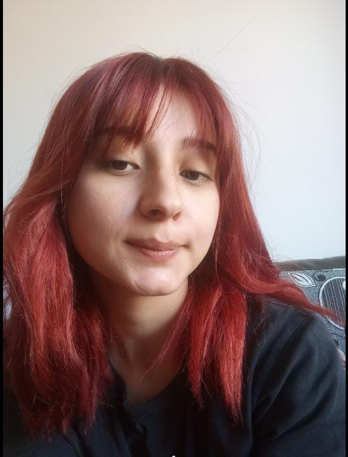

<!DOCTYPE html>
<html>

<head>
  <meta charset="UTF-8">
  <meta name="viewport" content="width=device-width, initial-scale=1"><meta property="og:image" content="">
<meta property="og:title" content="">
<meta property="og:description" content="">
  <title></title>
</head>

<body>
  
</body>

</html><!DOCTYPE html>
<html lang="tr">
<head>
<meta charset="UTF-8">
<meta name="viewport" content="width=device-width, initial-scale=1.0">
<title>Doğum Günün Kutlu Olsun</title>

<style>
body {
    margin: 0;
    padding: 0;
    background: white;
    font-family: Georgia, serif;
    color: #111;
    overflow-x: hidden;
}

.container {
    max-width: 750px;
    margin: auto;
    padding: 60px 25px;
}

.text {
    font-size: 20px;
    line-height: 1.9;
    text-align: justify;
}

.button-area {
    text-align: center;
    margin-top: 60px;
    transition: 0.5s;
}

button {
    padding: 15px 25px;
    font-size: 16px;
    background: black;
    color: white;
    border: none;
    border-radius: 30px;
    cursor: pointer;
}

.photo-section {
    margin-top: 120px;
    text-align: center;
    opacity: 0;
    transform: translateY(50px);
    transition: 1.5s ease;
}

.photo-section.show {
    opacity: 1;
    transform: translateY(0);
}

.photo-section img {
    width: 100%;
    max-width: 400px;
    border-radius: 20px;
    box-shadow: 0 15px 40px rgba(0,0,0,0.1);
}

.note {
    margin-top: 25px;
    font-size: 20px;
    font-weight: bold;
}

/* Hafif vignette */
.vignette {
    position: fixed;
    top: 0;
    left: 0;
    width: 100%;
    height: 100%;
    pointer-events: none;
    opacity: 0;
    transition: opacity 1.5s ease;
    background: radial-gradient(
        circle at center,
        rgba(0,0,0,0) 60%,
        rgba(0,0,0,0.15) 100%
    );
    z-index: 10;
}
.vignette.show {
    opacity: 1;
}
</style>
</head>

<body>

<div class="vignette" id="vignette"></div>

<div class="container">

<div class="text">
    <p>
    En zoru başlamak sanırım, nasıl başlayacağını bilmemek. Neyse, biraz kendi HTML (web kodlama bilgilerimi ve Chatgpt abimizi kullandım saolsun yardımcı oldu djdbduxj. Her ne kadar da inkar etsek Karadeniz'liyiz ya işte, kafaya bişey koydumu yapıyoruz.
    
    Mayaperest şarkısında  der ya işte; deva değil dert oldum, gül değil diken oldum.

İşte hayat boyu öyle hissettim kendimi. Herkes öyle hissettirdi bana. Ailem bile öyle davrandı bana. Hiç bir zaman istemediler beni. Tüm ailemin düzeni benim doğmamla değişti çünkü. O zamanlar aldiracak kadar erken olmadığı için aldıramamışlar beni. Annem de dedemden korkup İstanbul'a kaçmış. Bizimkilerde bir kaç ay sonra acımış, Tokat'da evlerini satıp her şeyi bırakıp İstanbul'a taşınmışlar sırf bana bakabilmek için. Gelişim bile düzen bozmuş. Hayatım boyu düşündüm babam bile doğduğumdan beri sevmemiş beni, sever mi bir başkası beni dedim. Hayat boyu kimsenin seveceğine inanmadım beni. Biz tekrar konuştuğumuzda bile acaba beni seviyor musun diye her gün Chatgpt'ye mesajlarımızı okuttum. Umut aradım onay aradım. Hayatta kimi önemsediysem kimden değer görmeyi beklediysem koptu gitti ellerimden. Bazıları daha değer vermeden bile gitti. Öyle yalnız kaldım ki kendimle. Artık sorunun hep kendim olduğunu düşünmeye başladım. Biz kavga ederken senle bile aslında sana sürekli o yüzden bana trip atma dedim. çünkü trip attığında öyle istenmeyen biriymiş gibi hissettim ki. Çünkü hayat boyu insanlar böyle yapti bana direkt tepki koydulae ilk hatamda.  ömrüm boyu o kadar beklenti ile sevildim ki kimse çıkarsız sevmedi beni. Herkes bir şey bekledi. Sen bana değiş dedin ya ben istesen adımı bile değiştirirdim ama konu o değildi. Bir kere olsun olduğum kişi sevilsin istedim. Birisi de benim kalbimi olduğum gibi sevsin istedim. Birisi de beni zor zamanimda kabul etsin istedim. Benim zor zamanimi birak iyi günümde bile neredeyse kimse yanimda olmadı. O yüzden dedim ben değişmem diye. Ama değişirim ki değiştim de. Sen beni reddettiğinde bile değiştim ben. O zamanlar öyle kızmıştım ki kendime. Korkak olmamdan, seni sevmemi söyleyemediğime. diye. dedim ya kimse sevmedi özümü, bir de hayatımda ilk defa böyle aşık olduğum kız mı sevecek dedim. zaten biz arkadaşken hiç bir zaman ilk tercihinde olmadım senin. Hani geçen dedim ya arkadaşken bir tek sen anladın beni. cidden anladın be buse. çok iyi hatırlıyorum o gün bi eğitimdeydim, seninn o mesajını saatlerce okumuştum. "Güneş gibisin,kendin yanıyosun ama sen etrafındakileri ısıtmaya çalışıyorsun" demiştin. ulan hayatım boyu ailem dahil kimse anlamadı şunu. onu bırak ben kendim bile farkında değildim ama benim içimi sen gördün. zaten seni özel hissediyordum daha da özelleştirdin kendini be zalim kız dudbdudjd. içimde hissettiğim her şeyi söylemekten korktum. o yüzden aylarca açılamadım bile sana. senle konuşuyorken bile rahatsız ediyorumdur diye korktum. sonra zaten gerisini biliyorsun. ilk 2 ay hiç bir şey değişmedi bende. ama sonra kendime öyle sinirlendim ki. hayat boyu yemin ettim. sevdiğimi asla saklamayacaktim kimseden. asla hoşlandığımı gizlemeyecektim. bir daha korkmayacaktım. insanların gidişi üzüntü verir sadece ama senin gidişin bile bana bir şeyler öğretmişti. aklımdan silmeye çalıştım seni işe yaradı da 2 3 ay biliyor musun. ve hayatıma farklı birilerinin girmesiyle ilgisi yok bunun. sonra tekrar aklıma düştün ya da Allah düşürdü bilemem. sebebsizce gelmedi ama bu düşüşün. sanki bir şeyler olacakmış hissiyatı vardır ya hani. yakın zamanda bir müjde alacakmışsın gibi. öyle hissettim günlerce belki aylarca. Ankara'ya gitmekle de alakası yok bu söylediğim olay Ankara'dan çok önce oldu. ama tabi o olaydan sonra daha fazla şeyler hissettim. Kendime olan nefretim tekrardan çıktı. dedim korkmasaydım amk 5 gün ya 5 önce cesaret etseydim her şey nasıl olurdu diye. hep o konuşmaya başladığımız ilk güne dönmeyi hayal ettim her gece, her uyumadan önce. kafamda milyonlarca senaryo döndü. dedim başka evrenlerde nasılızdır acaba. ama hikaye bu kadar dedim hep. kitabın kapağı kapandı sandım. ama sonra hiç bir şey öyle olmadı. sonra yeniden geldin işte. yeniden yaşarttın tüm dalları. taşırdın gönlümde ki dereleri. ama benim ki hiç bir zaman "sadece" seni elde etme mücadelesi olmadı. sevdiğimi sahiplenmek istedim onun için dağları deleyim çabalayım istedim. hiç bir zamanda bundan yorulmadım. hayatım boyu neye üzüldüysen ben ona daha çok üzüldüm çözmek için her şeyi yaptım. neyi sevdiysen sürekli onu sana vermeye çalıştım ama asla sana duygum sönmedi veya senden soğumadım. asla seni elde ettim rahatım düşüncesine kapılmadım. ben bazen seni anlayamadım. beni ne kadar sevdiğini anlayamadım çünkü kendimi bu kadar sevilmeye asla layık görmedim. Bir insanın yorgun olduğu halde benimle konuşmak isteyecek kadar beni sevebileceğini düşünmedim.  insandım hata yaptim ama kalbimde 1 saniye olsun sana kötü bir düşünce yaşatmadım. sana yalan söylemedim veya kandırmadım. senin için çabalamaktan, sana iyi hissettirmekten hep keyif duydum. ulan sen tatlı yerken, helva yerken bile yüzünün güldüğünü görüyodum ya sanki dünyalar benim oluyodu.yalan söylediysem de kendimle ilgili yalanlar söyledim. kötü hissettiğimde iyiymiş gibi rol yaptım, üzüldüğümde belli etmedim çünkü sevdiğim insanı da rahatsız etmek istemedim, benim dertlerimle de ekstra kafasını rahatsiz etsin istemedim. öyle çok sevdim ki hayat boyu ayağına bırak taşı, çakıl tanesi değmesin istedi kalbim. hayat boyu güçlü durma savaşı verdim. ama ne yaptim ettim, beni belki benden çok seven insanı da kendimden soğuttum. nefret ettirdim. ama inanıyorum ki iki kalp cidden birbiri içinse ne olursa olsun birbirlerini bulur. ister hayatlarının en zor sürecini geçirsinler yine de kavuşurlar. Ben gözlerinde bunu gördüm buse. umarım geçirdiğimiz süre boyu yüzünü bir an olsun güldürebilmişimdir. umarım en üşüdüğün gece bile sevgim bir tık olsun ısıtmıştır içini. yanına gelmemi istemediğin için böyle bir şey hazırladım sana. şimdi hazırsan aşağı bakabilirsin
    </p>
</div>

<div class="button-area" id="butonAlan">
    <p><b></b></p>
    <button onclick="goster()">Hazırım ❤️</button>
</div>

<div class="photo-section" id="photo">
    
    <div class="note">
        Sana senden daha güzel bir doğum günü hediyesi bulamadım. <br>
        Çiçek alsam solar,Gümüş alsam eskir ama senin güzelliğin asla değişmez.
        Doğum günün kutlu olsun 🎂
    </div>
</div>

<!-- Konfeti Kütüphanesi -->
<script src="https://cdn.jsdelivr.net/npm/canvas-confetti@1.5.1/dist/confetti.browser.min.js"></script>

<script>
function goster() {
    var photo = document.getElementById("photo");
    var vignette = document.getElementById("vignette");
    var buton = document.getElementById("butonAlan");

    // Fotoğrafı göster
    photo.classList.add("show");

    // Vignette efekti
    vignette.classList.add("show");

    // Buton kaybolsun
    buton.style.opacity = "0";
    setTimeout(() => { buton.style.display = "none"; }, 500);

    // Fotoğrafı aşağı kaydır
    photo.scrollIntoView({ behavior: "smooth" });

    // Konfeti başlat
    konfeti();
}

// Konfeti fonksiyonu
function konfeti() {
    var duration = 5 * 1000;
    var end = Date.now() + duration;

    (function frame() {
        confetti({
            particleCount: 3,
            angle: 60,
            spread: 55,
            origin: { x: 0 }
        });
        confetti({
            particleCount: 3,
            angle: 120,
            spread: 55,
            origin: { x: 1 }
        });

        if (Date.now() < end) {
            requestAnimationFrame(frame);
        }
    }());
}
</script>

</body>
</html>